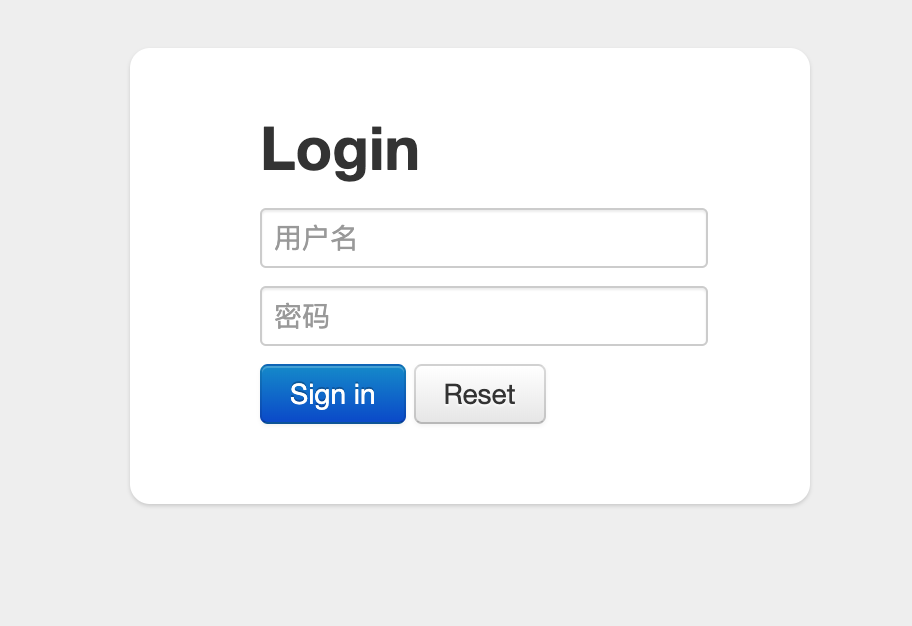
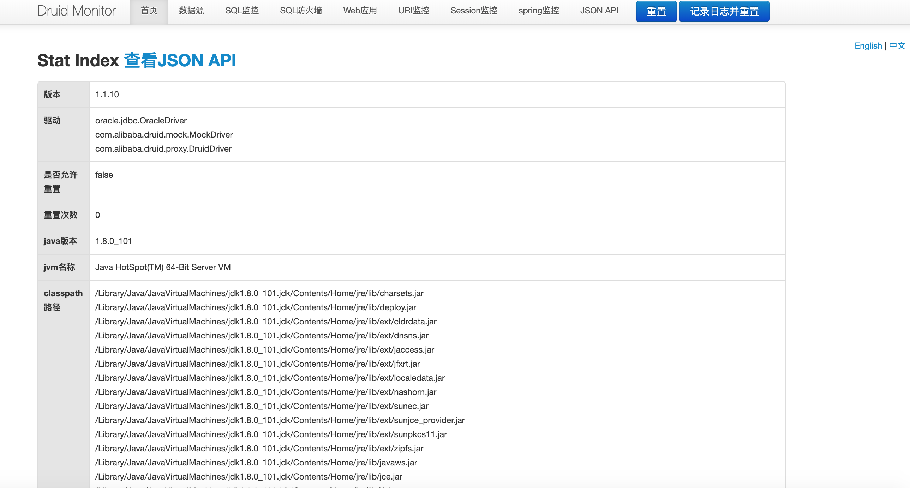
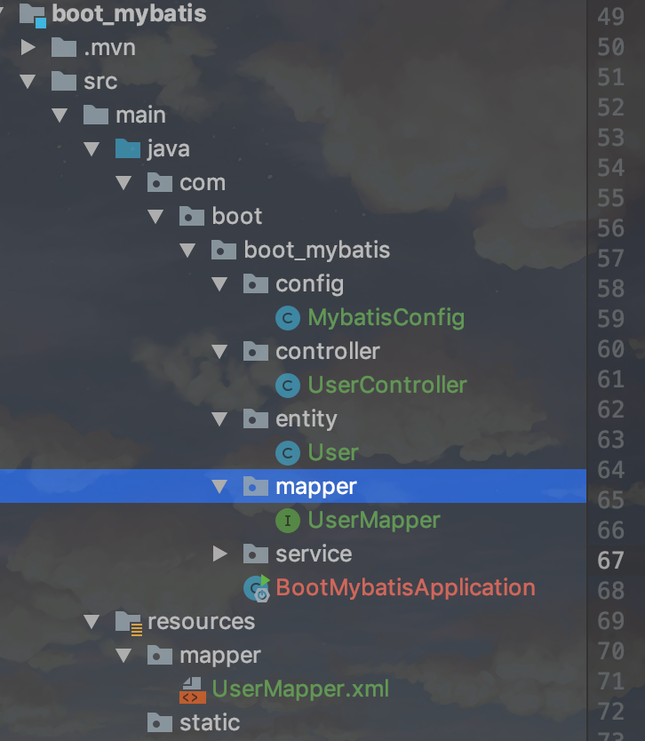
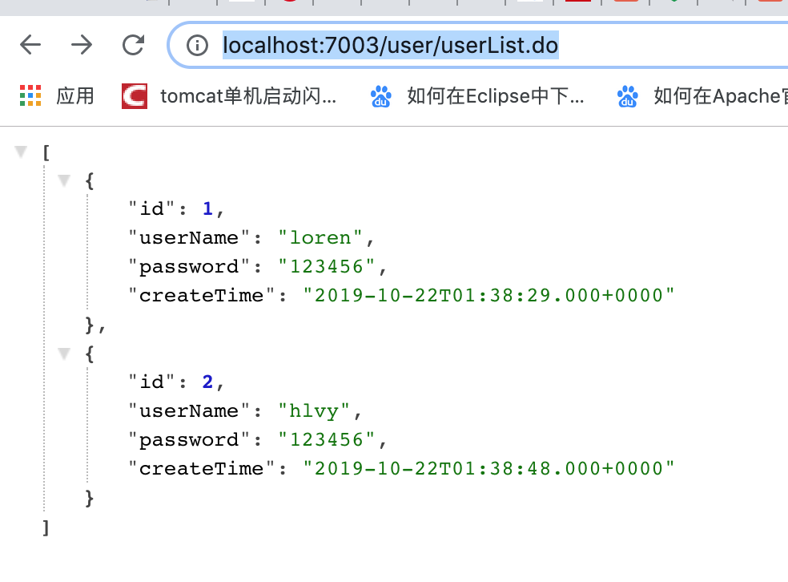
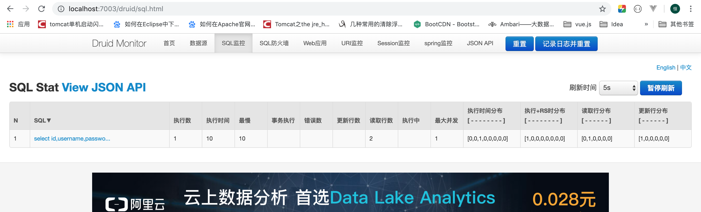

1.6.1. Springboot2.x集成mybatis(druid+xml方式)
项目地址:https://github.com/heng1234/springboot2.x/tree/master/boot_mybatis
整合MyBatis之前，先搭建一个基本的Spring Boot项目项目创建地址。这里使用关系型数据库Oracle 11g
创建数据表t_user
CREATE TABLE "T_USER"
( "ID" NUMBER(20,0) NOT NULL ENABLE,
"USERNAME" VARCHAR2(50),
"PASSWORD" VARCHAR2(50),
"CREATE_TIME" DATE
) SEGMENT CREATION IMMEDIATE
PCTFREE 10 PCTUSED 40 INITRANS 1 MAXTRANS 255 NOCOMPRESS LOGGING
STORAGE(INITIAL 65536 NEXT 1048576 MINEXTENTS 1 MAXEXTENTS 2147483645
PCTINCREASE 0 FREELISTS 1 FREELIST GROUPS 1 BUFFER_POOL DEFAULT FLASH_CACHE DEFAULT CELL_FLASH_CACHE DEFAULT)
TABLESPACE "SYSTEM"
INSERT INTO "BOOT"."user"("ID", "USERNAME", "PASSWORD", "CREATE_TIME") VALUES ('1', 'loren', '123456', TO_DATE('2019-10-22 09:38:29', 'SYYYY-MM-DD HH24:MI:SS'));
INSERT INTO "BOOT"."user"("ID", "USERNAME", "PASSWORD", "CREATE_TIME") VALUES ('2', 'hlvy', '123456', TO_DATE('2019-10-22 09:38:48', 'SYYYY-MM-DD HH24:MI:SS'));
Pom.xml文件引入jar
<!-- oracle驱动 -->
<dependency>
<groupId>com.oracle</groupId>
<artifactId>ojdbc6</artifactId>
<version>11.2.0.4</version>
</dependency>
<!--alibaba druid-->
<dependency>
<groupId>com.alibaba</groupId>
<artifactId>druid-spring-boot-starter</artifactId>
<version>1.1.10</version>
</dependency>
<!--lombok插件-->
<dependency>
<groupId>org.projectlombok</groupId>
<artifactId>lombok</artifactId>
<version>1.18.10</version>
<optional>true</optional>
</dependency>
集成druid application.yml配置
server:
port: 7003
spring:
datasource:
druid:
# 数据库访问配置, 使用druid数据源
# 数据源 oracle
type: com.alibaba.druid.pool.DruidDataSource
driver-class-name: oracle.jdbc.driver.OracleDriver
url: jdbc:oracle:thin:@localhost:49161:XE
username: boot
password: 123456
# 连接池配置
initial-size: 5
min-idle: 5
max-active: 20
# 连接等待超时时间
max-wait: 30000
# 配置检测可以关闭的空闲连接间隔时间
time-between-eviction-runs-millis: 60000
# 配置连接在池中的最小生存时间
min-evictable-idle-time-millis: 300000
validation-query: select '1' from dual
test-while-idle: true
test-on-borrow: false
test-on-return: false
# 打开PSCache，并且指定每个连接上PSCache的大小
pool-prepared-statements: true
max-open-prepared-statements: 20
max-pool-prepared-statement-per-connection-size: 20
# 配置监控统计拦截的filters, 去掉后监控界面sql无法统计, 'wall'用于防火墙
filters: stat,wall
# Spring监控AOP切入点，如x.y.z.service.*,配置多个英文逗号分隔
aop-patterns: com.boot.boot_mybatis.service.*
# WebStatFilter配置
web-stat-filter:
enabled: true
# 添加过滤规则
url-pattern: /*
# 忽略过滤的格式
exclusions: '*.js,*.gif,*.jpg,*.png,*.css,*.ico,/druid/*'
# StatViewServlet配置
stat-view-servlet:
enabled: true
# 访问路径为/druid时，跳转到StatViewServlet
url-pattern: /druid/*
# 是否能够重置数据
reset-enable: false
# 需要账号密码才能访问控制台
login-username: druid
login-password: 123456
# IP白名单
# allow: 127.0.0.1
# IP黑名单（共同存在时，deny优先于allow）
# deny: 192.168.1.218
# 配置StatFilter
filter:
stat:
log-slow-sql: true
#showSql
logging:
level:
com:
boot:
boot_mybatis:
mapper: debug
启动项目访问http://localhost:7003/druid/login.html 出现

用户名密码是配置文件配置的 用户名 druid 密码123456
登录进来会看到这个页面

集成mybatis
pom文件引入xmyabtis包
<!--mybatis-->
<dependency>
<groupId>org.mybatis.spring.boot</groupId>
<artifactId>mybatis-spring-boot-starter</artifactId>
<version>1.3.1</version>
</dependency>
创建 entity mapper controller service 以及resource创建mapper存储mapper xml文件
项目结构

application.yml加入
mybatis:
#扫描mapper xml
mapper-locations: classpath:mapper/*.xml
#扫描实体类
type-aliases-package: com.boot.boot_mybatis.entity
创建MybatisConfig用于扫描mapper接口
import org.mybatis.spring.annotation.MapperScan;
import org.springframework.context.annotation.Configuration;
/**
* @author : kaifa
* create at: 2019-10-22 10:03
* @description: mybatis配置类
*/
@Configuration
@MapperScan("com.boot.boot_mybatis.mapper")
public class MybatisConfig {
}
UserMapper.xml
<?xml version="1.0" encoding="UTF-8" ?>
<!DOCTYPE mapper PUBLIC "-//mybatis.org//DTD Mapper 3.0//EN"
"http://mybatis.org/dtd/mybatis-3-mapper.dtd">
<mapper namespace="com.boot.boot_mybatis.mapper.UserMapper">
<select id="selectListAll" resultType="com.boot.boot_mybatis.entity.User">
select id,username,password,create_time createTime from t_user
</select>
</mapper>
UserMapper
import com.boot.boot_mybatis.entity.User;
import java.util.List;
/**
* @author : kaifa
* create at: 2019-10-22 10:10
* @description: user mapper接口
*/
public interface UserMapper {
/**查询所有用户*/
List<User> selectListAll();
}
UserService
import com.boot.boot_mybatis.entity.User;
import com.boot.boot_mybatis.mapper.UserMapper;
import org.springframework.beans.factory.annotation.Autowired;
import org.springframework.stereotype.Service;
import java.util.List;
/**
* @author : kaifa
* create at: 2019-10-22 10:10
* @description: user 业务层
*/
@Service
public class UserService {
@Autowired
private UserMapper userMapper;
/**
* 查询所有用户
* @return
*/
public List<User> selectListAll(){
return userMapper.selectListAll();
}
}
controller
import com.boot.boot_mybatis.entity.User;
import com.boot.boot_mybatis.service.UserService;
import org.springframework.beans.factory.annotation.Autowired;
import org.springframework.web.bind.annotation.RequestMapping;
import org.springframework.web.bind.annotation.RestController;
import java.util.List;
/**
* @author : kaifa
* create at: 2019-10-22 10:16
* @description: user controller
*/
@RestController
@RequestMapping("user")
public class UserController {
@Autowired
private UserService userService;
/**
* 查询所有用户
* @return
*/
@RequestMapping("userList.do")
List<User> selectListAll(){
return userService.selectListAll();
}
}
浏览器访问http://localhost:7003/user/userList.do

查看druid监控
